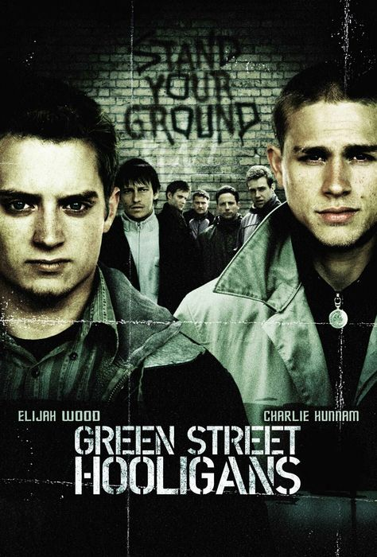
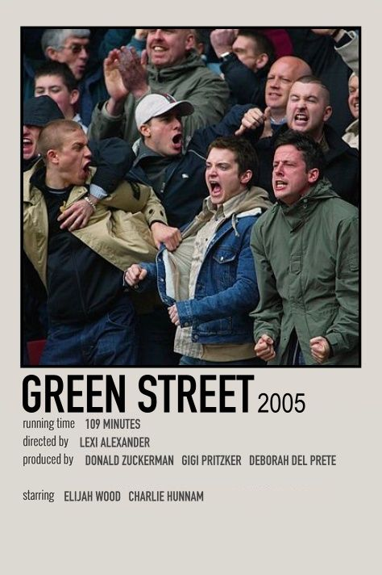
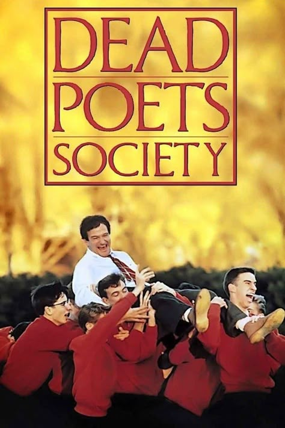
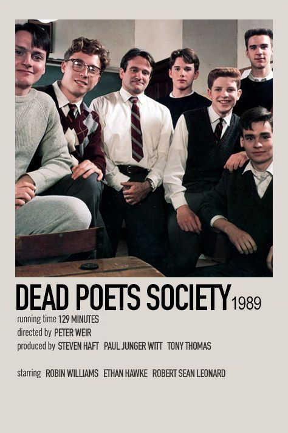
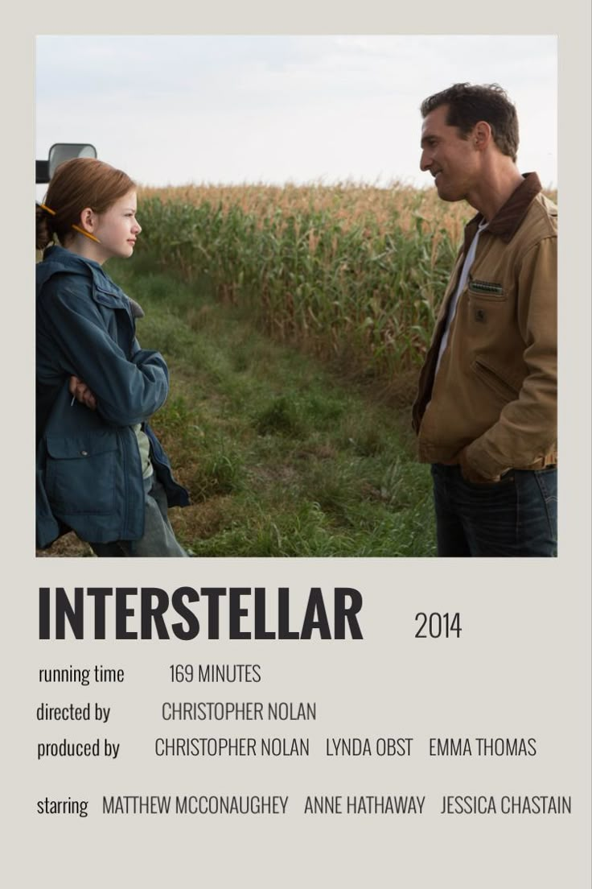

Green Street Hooligans is a film that focuses on marginalized groups and their way of life, showing the challenges of football fans in their daily struggles.


Dead Poets Society tells the story of young boys fighting for their freedom and the battle against societal and educational expectations.


This problem (fighting for freedom) is very tragic for me, sadly it happens a lot, for example, situation in Georgia today. Not just today, but throughout our country's history. Fighting both of the problems is one of the most important for me.
Interstellar is a sci-fi thriller exploring ways to save humanity from a dying Earth by traveling to distant planets. The way this movie is made is just...Wow! Watch it if you haven't yet.

